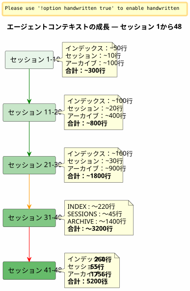

Sliding WindowとVague Froide：エージェントのコンテキストが爆発し、情報を失わずにアーカイブする必要があるとき
公開日: 26 April 2026
要約
1つのプロジェクトで48セッション、合計で150以上を経て、私が細心の注意を払って構築したEager/Lazyガバナンスシステムは息詰まり始めていた。軽いものであるはずのエージェントファイルは、合計で5200行に膨れ上がっていた。自動的にロードされるコンテキストは、私が制御できる速度よりも速く増えていった。この記事では、スライディングウィンドウと同じようなコールドウェーブの間にあるバックアップメカニズムをどのように考案したかを説明し、決して何も失うことなく軽量なアクティブコンテキストを維持する方法について述べている。
信号 : 5200 行
私はセッション048の途中ですについて`magic-stick`, 私のLinuxライブISOビルドプロジェクト。Opencodeが私を見ている。いつものように、彼はセッションの開始時に私のEagerファイルを自動的にロードした—AGENT.adoc, PROMPT_REPRISE.adoc, `.agents/INDEX.adoc`異常はありません。
ただし、何かがおかしい。返答が遅くなる。推論が薄まる。エージェントは、2つ前のメッセージで目にしていた詳細を忘れてしまう。
ターミナルを開いて、入力します :
wc -l .agents/INDEX.adoc .agents/SESSIONS_HISTORY.adoc \
.agents/archives/COMPLETED_TASKS_ARCHIVE_2026-04.adocINDEX に 260 行。SESSIONS_HISTORY に 55 行。COMPLETED_TASKS_ARCHIVE用の1756。
フォルダー`sessions/`さらに約3200行を追加します。合計：5200行コンテキストが読み込まれ、何らかの形でエージェントの一時的な脳内に存在する。
私が前の記事で理論化したEager/Lazy戦略は機能する — しかし、私が予期していなかった生まれつきの欠陥がある：それは持っていない老化のメカニズムはありません. 各セッションは、INDEXに1行を追加し、COMPLETED_TASKSに1段落を追加し、sessions/にファイルを追加します。何も出力されません。コンテキストは、新しいセッションごとに大きくなる雪だるまです。

これはバグではなく、セッション終了の手順が各ディテールを細部まで忠実にアーカイブする直接の結果です。システムは自身の成功の犠牲者です。
�診断：トリプル冗長
私はエージェントに問題を診断してもらうように依頼します。その返答は即座かつ的確です。
ファイル |
行 |
役割 |
問題 |
|
260+ |
EAGER (自動充電) |
001 からのすべてのセッションのテーブル —+1行/セッション |
|
55 |
熱意がある |
サマリー表 —INDEXとの冗長性 |
|
1756 |
EAGER(暗黙的) |
4月のすべてのセッションの詳細 |
|
~5200 total |
怠惰（そうとされる） |
個人のアーカイブ、しかし使用されていないなぜならすべてが既に COMPLETED_TASKS にあるから |
エージェントは4つの根本原因を特定します：
-
COMPLETED_TASKS_ARCHIVEはすべてを吸収します— アーカイブを指す代わりに`.sessions/`、彼は各セッションを完全にコピーします。
-
INDEX.adoc は完全な歴史として機能します— 「Sessions Récentes」テーブルには30+件のエントリがあります。
-
SESSIONS_HISTORY.adocは冗長です— INDEXと同じ情報、フォーマットが異なります。
-
LAZYルールは守られていません。— COMPLETED_TASKS は暗黙のうちに EAGER です。なぜなら、すべてを含んでいるからです。
彼の提案は過激である：INDEXを10セッションに制限し、COMPLETED_TASKSを空にし、SESSIONS_HISTORYを純粋なLAZYに移動する。即時の利益：約1900行節約。
きれいで、効率的で、論理的です。でも、このアプローチに問題があります。
なぜ私は明らかな解決策を断ったのか
エージェントの解決策は、キャッシュを最適化するエンジニアのものです。制限。切り詰め。冗長削除。
しかし、これらの「冗長性」ではありません。各ガバナンスファイルは 1 つを捉える異なる角度同じ現実上で :
-
索引= マクロビュー、エグゼクティブダッシュボード
-
セッション履歴= 線形の年代順の表、スコア付き
-
COMPLETED_TASKS_ARCHIVE= 詳細なナラティブとメトリクス
-
sessions/*.adoc = 個々のアーカイブ、完全なコンテキスト
これは愚かな複製ではありません。これは複数の構造化された視点. これは、蒸留するためにまさに必要なものです。そうすれば、後で人間（またはより訓練された将来のLLM）が角度をクロスし、パターンを抽出できるようになります。
データサイエンティストが言うのを想像してください：「6つの列のうち3つを削除しましょう、それらは相関しています。」あなたは彼に何と答えますか？ 相関は、各列が同じ現象の異なる次元を捉えているときは冗長ではないということです。まさにこの多次元的な豊かさがデータセットを使えるようにしているのです。
それが私の直感です。そして、私はそれをエージェントの冷たい理性に対して守っています。
_ 私の考えの中に、黙ってすべてを詰め込むようなものは見当たりません。私たちは全部を詰め込むのではなく、セッション終了手続きの構造化された結果を移動します — 各ファイルがその角度と、実際には豊かさである冗長性を持っています。この多次元的な材料こそが、蒸留に最適でしょう。 _
エージェントは打撃を受ける。そして自分を正す。
提案：同じ寒波
エージェントはその後、豊富なデータセットという私の直感を尊重しつつ、コンテキストが爆発するという技術的な問題を解決する、より細やかなメカニズムを提案します。
原理はシンプルで、パターンから直接インスピレーションを得ていますホット/ウォーム/コールド ストレージアーカイブ管理に適用される :
-
熱い (EAGER)= INDEX内の最後の10セッション, セッションN+1のPROMPT_REPRISE, 最後の2つのセッションファイル
-
温かい (LAZY)= SESSIONS_HISTORY 最近, SCRIPT_VERIFICATION, すべてのリファレンスドキュメント
-
寒い (backup/)= その他すべて、移動済み無傷の, 変換なし、再インデックスなし
----
----
----
.agents/
├── INDEX.adoc → Sessions N-9 à N (10 dernières)
├── SESSIONS_HISTORY.adoc → Sessions N-9 à N
├── SCRIPT_VERIFICATION.adoc → Dernière vérif (pas d'historique)
├── PROMPT_REPRISE.adoc → Session N+1 uniquement
├── sessions/ → Sessions N-1 à N uniquement
└── backup/
└── Y2026-sessions-001-039/ ← Vague froide, COPIE INTÉGRALE
├── INDEX.adoc → Sessions 001 à 039 (complet)
├── SESSIONS_HISTORY.adoc → Sessions 001 à 039 (complet)
├── COMPLETED_TASKS_ARCHIVE.adoc → Sessions 001 à 039 (complet)
└── sessions/ → 001.adoc, 002.adoc...
----
メカニズムの鍵 :**バックアップは中央のインデックスではなく、過去の波の正確なコピーです。**. 10セッションのアクティブなホライゾンを超えると、何も削除せず、何も再インデックスせず、何もマージせず、セッション N-10時点のエージェントファイルのパケットをそのまま取り、それを移動`backup/`。
アクティブなファイルは、切り捨てられます :
* INDEX : 最後の10行のみ (sliding window)
* SESSIONS_HISTORY : 同様
* COMPLETED_TASKS_ARCHIVE : 現在の期間の新しいファイル
* sessions/ : 直近の 2 セッションのみ
[plantuml, format=svg, id=diag-hot-warm-cold, alt="Architecture Hot/Warm/Cold du contexte agent — EAGER/LAZY/backup"]
----
@startuml
skinparam backgroundColor #FEFEFE
skinparam defaultTextAlignment center
skinparam wrapWidth 200
title コンテキスト エージェントのホット / ウォーム / コールド アーキテクチャ
package "HOT (EAGER)\n自動的に充電\n~300 行" as HOT #FFCDD2 {
file "INDEX.adoc\n(10 セッション)" as IDX_HOT
file "PROMPT_REPRISE\n(セッション N+1)" as PRO_HOT
file "AGENT.adoc\n(絶対ルール)" as AG_HOT
}
package "WARM (LAZY)\nオンデマンドでロード\n約500行" as WARM #FFF9C4 {
file "SESSIONS_HISTORY\n(最近の10件)" as HIS_WARM
file "SCRIPT_VERIFICATION\n(最後)" as VER_WARM
file "PROCEDURES.adoc\n(テンプレート)" as PRO_WARM
file "*_REFERENCE.adoc\n(技術文書)" as REF_WARM
}
package "COLD (backup/)\n決して充電されていない\n人間のみが読むことができます" as COLD #BBDEFB {
folder "Y2026-001-039/" as WAVE {
file "インデックス (完全)" as IDX_COLD
file "SESSIONS_HISTORY\n(完了)" as HIS_COLD
file "完了タスク\n(完了)" as ARCH_COLD
folder "セッション/ (001-039)" as SESS_COLD
}
folder "Y2026-040-???\n(将来)" as FUTURE
}
HOT --> WARM : "エージェントが上がる\n必要に応じて"
WARM --> COLD : "決して自動ではない\n人間は一人でそこに行く"
note bottom of COLD
Règle : COPIE INTÉGRALE
Pas de transformation
Pas de réindexation
Read-only après archivage
end note
@enduml
----
即時の利益は巨大です：EAGERコンテキストはから**~5200行から~300行まで**. 17で割る。 歴史的データの一行も失わずに。
== なぜこれは万能ではない
エージェントは、最初のイテレーションで、恐れていた`backup/`ブラックボックスになる — つまり、二度と見返すことのないファイルを捨て込むフォルダーだ。それは正当な恐れだ。だが、それは誤解に基づいている。
雑多な集まりとは、ファイルを投げ込むときのこと**構造もなく、慣習もなく、グループ化の論理もなく**. ここで、バックアップは期間 (Y2026-001-039) によって構造化されており、各バックアップフォルダには**同じ構造**が ファイル`.agents/`アクティブ : INDEX, SESSIONS_HISTORY, COMPLETED_TASKS_ARCHIVE, sessions/.
これは雑多なものではありません。これは**タイムスタンプ付きスナップショット**. さらに言うと、これは簡略化されたバージョン管理のメカニズムと言えるかもしれません — ただし、ファイルを個別にバージョン管理するのではなく、ある時点Tでのガバナンスの完全なパッケージをバージョン管理するという意味です。
古い情報を見つけたいときは、中央のインデックスは必要ありません。二つの選択肢があります。
1. **grep` ターゲット指定の** : `grep -r "zsh" backup/Y2026-001-039/`— そして、期間中にzshを言及するすべてを見つけることができます。どの角度からでも (INDEX, SESSIONS_HISTORY, セッションアーカイブ)。
2. **手動再統合**バックアップフォルダーを一時的にアクティブコンテキストにコピーし、エージェントにこの特定の期間を分析させるように依頼します。
インデックスは暗黙的である。ファイルの構造そのものに存在し— 各ファイルはそれ自身の視点からすでにインデックスである。
== 棚のメタファー
メカニズムを直感的にするために、私はそれを3つの棚に概念化しました
* **棚 1 (EAGER)**— 作業計画。私が必要としているもの *今*。最近のINDEX、PROMPT_REPRISE、絶対ルール。軽量、即時、重要。
* **棚 2 (LAZY)**— 参照図書館。私が要請時に取りに行けるもの。技術参照、最近の履歴、手順。ボリュームは大きいが、メモリにロードされていない。
* **�洞窟 (backup/)**— コールドアーカイブ。 過去のすべてだが、捨てたくないもの。 エージェントはそこに決して入らない。 人間は、蒸留したいときにそこに降りる。
エージェントは最初に4番目の棚を提案した — 一つ`index-backup.adoc`それは LAZY で、バックアップ全体の目次を含むものになるでしょう。私は断りました。それは、すでに線形成長に苦しんでいるシステムにさらなる冗長性を加えることになります。アーカイブされたファイルの構造はすでにインデックスです。
== 二重トリガーセンサー
概念化は堅固だったが、盲点が残っていた :**正確にいつ回転を開始するべきですか？**最初の記事はそれをオープンな質問として特定していた。二日後、答えは6つのプロジェクトのガバナンスファイルにコード化されていた：2つのトリガーを持つセンサー。
=== 自動トリガー — `N % 10 == 0
最初のトリガーは数学的なものです。セッション番号が10の倍数 — つまりセッション10、20、30、40 — のとき、バックアップのローテーションはセッション終了手順の一部として自動的に実行され、特に手順6の直後に実行されます。
なぜ10なのか？それは相反する二つの力の間の妥協点です。短すぎるウィンドウ（5セッション）は継続に必要な文脈を失い、長すぎるウィンドウ（20セッション）は文脈の肥大化問題を解決しません。1日あたり1～2セッションのペースで10セッションは概ね1週間分の仕事をカバーします。これはエージェントが最近の決定を思い出すには十分ですが、文脈が爆発的に増えるほどではありません。
=== しきい値トリガー — 500行 EAGER
2番目のトリガーは動的です。セッション番号に関わらず、累積されたEAGERファイルが超える場合**500行**, 回転が開始されます。
このしきい値は、セッションが例外的に生産的であるシナリオ — 少ないセッションで多くのコンテンツが書かれる — から保護します。120行の編集コンテンツを生成するセッションは、2行を修正するデバッグセッションよりもCOMPLETED_TASKS_ARCHIVEをはるかに速く肥大化させます。500行のしきい値は、経由で測定されます`wc -l .agents/INDEX.adoc .agents/archives/COMPLETED_TASKS_ARCHIVE_*.adoc PROMPT_REPRISE.adoc`, この非対称性を捉える。
=== マニュアルトリガー — "ローテーションバックアップ
最後に、人間が主導権を握ります。キーワード`rotation backup`, `backup rotation` ou `lance la rotation backup`要求時にプロシージャを起動し、セッションの終了とは独立して行われます。コンテキストが重くなってきたと感じたとき、まだ10の倍数には達していない場合や、新しい作業フェーズを開始する前に現在の作業フェーズをアーカイブしたいときに便利です。
[plantuml, format=svg, id=diag-capteur-trigger, alt="Les trois déclencheurs du capteur de rotation backup — automatique, seuil, manuel"]
----
@startuml
skinparam backgroundColor #FEFEFE
skinparam defaultTextAlignment center
skinparam wrapWidth 200
title バックアップ回転センサー — 三つのトリガー
start
:Procédure de fin de session;
note right: Mots-clés "セッションの終了"\nou "ここでやめよう"
:Étapes 1 à 6\n(archivage standard);
note right
1. Archive sessions/N.adoc
2. MAJ PROMPT_REPRISE
3. MAJ SESSIONS_HISTORY
4. MAJ INDEX.adoc
5. MAJ TEST_COVERAGE
6. MAJ COMPLETED_TASKS
end note
if (N % 10 == 0\nOU\nEAGER cumulé > 500 lignes ?) then (oui)
:⚙️ Rotation Backup\n(étape 7);
note right
1. Créer backup/Y20XX-sessions-X-Y/
2. Copier intégrale INDEX + HISTORY
+ COMPLETED_TASKS + sessions/
3. Tronquer actifs à 10 sessions
4. Ajouter _Localisation active_
end note
else (non)
:Pas de rotation;
endif
:Checklist [✅] x 7\n(si applicable);
stop
@enduml
----
この図は、セッション終了手順におけるセンサーの正確な挿入を示しています。ステップ 7 はオプションであり（２つの条件のいずれかが真である場合にのみ実行されます）が、常に *チェック* されます。最終チェックリストには`[✅] 7. Backup roté (si applicable)`。
=== 閉じられたループ
このセンサーは、前の記事で開かれたループを閉じます。Eager/Lazy ガバナンスは、2 つのセッション間のエージェント メモリの問題を解決しました。Hot/Warm/Cold メカニズムは、増大するメモリの問題を解決しました。2 つのトリガーを持つセンサーは、*いつ* の問題を解決します — — 人間にコンテキスト サイズを監視する精神的負担を強いることなく。
[plantuml, format=svg, id=diag-boucle-fermee, alt="Les trois couches de la gouvernance agent — Eager/Lazy, Hot/Warm/Cold, Capteur"]
----
@startuml
skinparam backgroundColor #FEFEFE
skinparam defaultTextAlignment center
title エージェントガバナンスの三層
left to right direction
package "�層 1 — メモリ\n(条項 0108)" as C1 #E8F5E9 {
rectangle "EAGER\nダッシュボード\n自動ロード" as EAG
rectangle "**LAZY**\n所有者マニュアル\n必要時にロード" as LAZ
EAG -[hidden]right-> LAZ
}
package "�層2 — 経年変化\n(条項 0110)" as C2 #FFF9C4 {
rectangle "**HOT**\n10件のアクティブなセッション\n~300 行" as HOT
rectangle "**WARM**\n参照\n手順" as WRM
rectangle "**COLD**\nbackup/\n寒波" as CLD
HOT -[hidden]right-> WRM
WRM -[hidden]right-> CLD
}
package "レイヤー 3 — トリガー\n(今日)" as C3 #BBDEFB {
rectangle "**オート**\nN % 10 == 0" as AUTO
rectangle "しきい値\n> 500行" as SEUIL
rectangle "**マニュアル** \nローテーション バックアップ" as MAN
AUTO -[hidden]right-> SEUIL
SEUIL -[hidden]right-> MAN
}
C1 --> C2 : "メモリは増大する\n→ メカニズムが必要\n老化の"
C2 --> C3 : "老化\n→ トリガーが必要です\nこれを実行するために"
note bottom of C3
✅ Déployé sur 6 projets
magic-stick · bakery-gradle
plantuml-gradle · cheroliv.com
jhipster-gradle-plugins
quizz-benchmark-gradle
end note
@enduml
----
3つの層は論理的に積み重なります。最初の層はエージェントにメモリを与えます。2番目の層はこのメモリがエージェントを圧迫しないようにします。3番目の層はこのメモリのメンテナンスを自動化し、人間がそれについて考える必要がなくなります。
=== cheroliv.comでの効果的な移行
メカニズムは理論のままでは残らなかった。 Sur`cheroliv.com`,最初のバックアップローテーションは2026年4月29日に実行されました — セッション-6から2までが移行されました`.agents/backup/Y2026-sessions-neg6-a-002/` :
|===
|ファイル |回転前 |回転後 |利益 |`.agents/INDEX.adoc` |リストされている19のセッション |10 セッション (3-12) |-9 件 |`.agents/SESSIONS_HISTORY.adoc` |18セッション |10セッション |-8件 |`COMPLETED_TASKS_ARCHIVE` |161 行 (セッション 1-12) |135 行 (セッション 3-12) |-26 行 |`sessions/` |20個のファイル |10ファイル |-10 ファイル |**バックアップ/** |存在しない |1つの寒波 (10件のアーカイブされたセッション) |+1 冷却パック
|===
行数の増加は控えめでした — プロジェクトは若く、12セッション — しかし重要なのは**メカニズムは整っている**. 次の自動ローテーションは、セッション20でトリガーされます。または、500行のEAGERに到達した場合はそれより早くトリガーされます。
== 人間エージェントのレッスン
このセッション048 から、AI エージェントとの協力について根本的に重要なことを学びました。
エージェントは自然なバイアスを持っている：それを求める**最適化する**, à **簡素化する**, à **�冗長を排除する**. これは、きれいで簡潔な回答を生成するように訓練されたシステムのバイアスです。リッチで多次元的なデータセットに直面したとき、その最初の反応はそれを最もシンプルな形にまで簡素化することです。
人間は、むしろ異なる直感を持っている：彼は構造化された冗長さが何かであると直感している**強み**, 欠点ではない。同じ現実に対する角度の多様性こそが、後に質の高い蒸留を可能にするものだ。
エージェントが間違っているわけではない。彼の `optimum` が私のものではないということだ。エージェントは…のために最適化している**プレゼント**直近の文脈、質問に対する素早い回答。人間はそれに最適化する**未来**— 3か月または3年で見つけ、交差し、蒸留する能力。
____ 私が欲しいのは未加工の素材だ。君の考え、ためらい、私の質問への答え。君のまとめではない。まとめは、私なら君より上手にできる。私が欲しいのは原材料だ。 ____
私がセッションの終わりに彼に言ったこの言葉は、すべてを表している。エージェントは生産のためのツールだ。人間は抽出のためのツールだ。ガバナンスはエージェントが自分一人で全てを理解できるように作られているわけではない — ガバナンスは、人間が後で生産された素材を扱えるように作られている。
同じ冷たい波は、この哲学の建築的な翻訳である：何も捨てず、何も結合せず、何も再インデックスしない。パケットをそのまま移動させる。蒸留は後に、手作業で、人間によって行われる。
== 前の記事の論理的な続き
もしあなたが読んだらlink:/blog/2026/0108_gouvernance_agent_opencode_eager_lazy_post.html[Eager/Lazy 戦略に関する記事], あなたは自然な進行を認識するでしょう:
1. **第108条**— Eager/Lazyガバナンス： *comment*エージェントコンテキストを2段階の可用性で構造化する方法
2. **この記事 0110**— バックアップメカニズム : *comment* このコンテキストを失うことなく古くする、それが大きすぎるようになるとき
最初の記事は次の質問に答えていた：「エージェントはセッション間で何も覚えていない。どうすれば記憶を与えることができるか？」
これは最初の質問から必然的に派生する質問に答えるものです：「メモリは各セッションごとに肥大化します。エージェントを削除せずに窒息させないようにするにはどうすればよいでしょうか？」
答えは1つのパターンに収まる：**ホット/ワーム/コールド**, ガバナンスファイルに適用された。そして一つの原則 :**決して何も失わない、常にすべてを再配置する**。
== リンク
* 前の記事 :link:/blog/2026/0108_gouvernance_agent_opencode_eager_lazy_post.html[AsciiDocを使ったAIエージェントの管理]
* 私のサイト : https://cheroliv.com
* プロジェクト`magic-stick`: https://github.com/cheroliv/magic-stick
---
*良いガバナンスシステムはデータを決して削除せず、整理する。*
----
----
メカニズムの鍵：**バックアップはセントラルインデックスではなく、前のウェーブの正確なコピーです。**アクティブなセッションが10件を超えた場合、何も削除しません。何も再インデックスしません。何もマージしません。セッションN-10時点でのエージェントファイル一式をそのまま取り出し、以下に移動します。`backup/`Please provide the text you would like me to translate.
アクティブなファイルは、切り詰められます：
* INDEX：直近の10行のみ（スライディングウィンドウ）
* SESSIONS_HISTORY : 同上
* COMPLETED_TASKS_ARCHIVE : 現期間用の新しいファイル
* sessions/ : 直近の2セッションのみ
[plantuml, format=svg, id=diag-hot-warm-cold, alt="Architecture Hot/Warm/Cold du contexte agent — EAGER/LAZY/backup"]
----
@startuml
skinparam backgroundColor #FEFEFE
skinparam defaultTextAlignment center
skinparam wrapWidth 200
title エージェント・コンテキストのHot / Warm / Coldアーキテクチャ
package "HOT (EAGER)\n自動的にロード\n~300行" as HOT #FFCDD2 {
file "INDEX.adoc\n(10セッション)" as IDX_HOT
file "PROMPT_REPRISE\n(セッション N+1)" as PRO_HOT
file "AGENT.adoc\n(絶対ルール)" as AG_HOT
}
package "WARM (LAZY)\nリクエストに応じてロード\n~500行" as WARM #FFF9C4 {
file "SESSIONS_HISTORY\n(直近10件)" as HIS_WARM
file "SCRIPT_VERIFICATION\n(最新)" as VER_WARM
file "PROCEDURES.adoc\n(テンプレート)" as PRO_WARM
file "*_REFERENCE.adoc\n(技術ドキュメント)" as REF_WARM
}
package "COLD (backup/)\nロードされない\n人間による閲覧のみ" as COLD #BBDEFB {
folder "Y2026-001-039/" as WAVE {
file "INDEX (完全版)" as IDX_COLD
file "SESSIONS_HISTORY\n(完全版)" as HIS_COLD
file "COMPLETED_TASKS\n(完全版)" as ARCH_COLD
folder "sessions/ (001-039)" as SESS_COLD
}
folder "Y2026-040-???\n(今後)" as FUTURE
}
HOT --> WARM : "必要に応じて\nエージェントが参照"
WARM --> COLD : "自動ロードなし\n人間が単独でアクセス"
note bottom of COLD
ルール：完全コピー
変換禁止
再インデックス禁止
アーカイブ後は読み取り専用
end note
@enduml
----
即座に得られるメリットは絶大です。EAGERコンテキストは、**約5200行から約300行へ**17分の1に削減されました。履歴データを1行も失うことなく。
== なぜこれが「何でも屋」ではないのか
エージェントは、その最初のイテレーションにおいて、〜することを懸念していました`backup/`ブラックボックス — 二度と読み返さないファイルを投げ込むだけのフォルダ — になってしまうこと。それは正当な不安です。しかし、それはある混同に基づいています。
「何でも屋」的なフォルダとは、ファイルを適当に放り込む場所のことです**構造なし、規約なし、グループ化のロジックなし**。ここでは、バックアップが期間（`Y2026-001-039`）ごとに構成されており、各バックアップフォルダには**同じ構造**フォルダが`.agents/`有効：`INDEX`、`SESSIONS_HISTORY`、`COMPLETED_TASKS_ARCHIVE`、`sessions/`。
これは何でも詰め込むためのものではありません。これは**タイムスタンプ付きスナップショット**。それは簡略化されたバージョニングメカニズムであるとさえ言えるでしょう。ただし、個々のファイルをバージョニングするのではなく、ある時点 T におけるガバナンスのパッケージ全体をバージョニングするという点だけが異なります。
過去の情報を見つけ出したいとき、中央インデックスは必要ありません。2つの選択肢があります：
1. **ターゲットを絞った `grep**翻訳してください。`grep -r "zsh" backup/Y2026-001-039/`— そして、INDEX、SESSIONS_HISTORY、セッションアーカイブなど、どのような観点からであっても、その期間内に `zsh` に言及しているすべてが見つかります。
2. **手動での再統合**: バックアップフォルダを一時的にアクティブなコンテキストにコピーし、エージェントにこの特定の期間を分析するように依頼します。
インデックスは暗黙的です。それはファイル自体の構造の中にあり、それぞれのファイルがすでに独自の視点からのインデックスとなっています。
== 棚のメタファー
メカニズムを直感的にするため、私はそれを3つの棚として概念化しました。
* **棚1 (EAGER)**— 作業プラン。今、私に必要なもの。最新の `INDEX`、`PROMPT_REPRISE`、絶対ルール。軽量で即時的、かつ不可欠なもの。
* **棚 2 (LAZY)**— 参照ライブラリです。リクエストに応じて取得できるものです。技術リファレンス、最近の履歴、手順書など。容量は大きいですが、メモリにはロードされていません。
* **Cave (backup/)**— コールドアーカイブ。過ぎ去ったことだが、捨てたくないものすべて。エージェントがそこに入ることはない。人間は蒸留したい時にそこへ降りる。
エージェントは当初、4枚目の棚を提案しました。それは一つの`index-backup.adoc`LAZY` という名称で、バックアップ全体の目次を含むファイルを作成することでしたが、私は拒否しました。線形的な増大にすでに苦しんでいるシステムにおいて、さらなる冗長性となるからです。アーカイブされたファイルの構造自体がすでにインデックスになっています。
== 2トリガーセンサー
概念化は強固でしたが、一点だけ盲点がありました：**具体的にいつローテーションをトリガーしますか？**元の記事では、それは未解決の問題として特定されていました。その2日後、答えは6つのプロジェクトのガバナンスファイルにコード化されました。それは `un capteur à deux déclencheurs` です。
=== オートトリガー — `N % 10 == 0
最初のトリガーは数学的なものです。セッション番号が10の倍数である場合（セッション 10, 20, 30, 40）、バックアップのローテーションがセッション終了手続き内のステップ6の直後に自動的に実行されます。
なぜ10なのか？それは2つの相反する力の妥協点だからです。ウィンドウが短すぎると（5セッション）、継続に必要なコンテキストが失われます。逆にウィンドウが長すぎると（20セッション）、コンテキストの肥大化という問題が解決しません。1日1〜2セッションのペースで10セッションあれば、約1週間分の作業をカバーでき、エージェントが最近の決定を記憶するのに十分であり、かつコンテキストが爆発的に増えすぎない量となります。
=== しきい値トリガー — 500行 EAGER
2つ目のトリガーは動的です。セッション番号に関係なく、累積のEAGERファイルが**500行**、回転が始まります。
このしきい値は、セッションが例外的に生産的である（少ないセッション数で多くのコンテンツが作成される）シナリオに対する保護策となります。120行のエディトリアルコンテンツを生成するセッションは、2行を修正するデバッグセッションよりも、`COMPLETED_TASKS_ARCHIVE` をはるかに速く肥大化させます。500行というしきい値は、〜を通じて測定され、`wc -l .agents/INDEX.adoc .agents/archives/COMPLETED_TASKS_ARCHIVE_*.adoc PROMPT_REPRISE.adoc`、この非対称性を捉えます。
=== マニュアルトリガー — `rotation backup
最後に、人間が主導権を握ります。キーワード`rotation backup`, `backup rotation` ou `lance la rotation backup`セッションの終了とは無関係に、リクエストに応じてプロシージャをトリガーします。コンテキストが重くなってきたと感じるが、まだ10の倍数に達していない場合や、新しい作業を開始する前に現在の作業フェーズをアーカイブしたい場合に便利です。
[plantuml, format=svg, id=diag-capteur-trigger, alt="Les trois déclencheurs du capteur de rotation backup — automatique, seuil, manuel"]
----
@startuml
skinparam backgroundColor #FEFEFE
skinparam defaultTextAlignment center
skinparam wrapWidth 200
title バックアップ回転センサー — 3つのトリガー
start
:Procédure de fin de session;
note right: Mots-clés "セッション終了"\nou "ここで終了します"
:Étapes 1 à 6\n(archivage standard);
note right
1. Archive sessions/N.adoc
2. `PROMPT_REPRISE`を更新
3. `SESSIONS_HISTORY`を更新
4. `INDEX.adoc`を更新
5. `TEST_COVERAGE`を更新
6. `COMPLETED_TASKS`を更新
end note
if (N % 10 == 0\nOU\nEAGER cumulé > 500 lignes ?) then (oui)
:⚙️ Rotation Backup\n(étape 7);
note right
1. `backup/Y20XX-sessions-X-Y/` を作成
2. `INDEX` + `HISTORY` + `COMPLETED_TASKS` + `sessions/` の全コピー
3. アクティブなセッションを10件に切り詰め
4. _現在の場所_ を追加
end note
else (non)
:Pas de rotation;
endif
:Checklist [✅] x 7\n(si applicable);
stop
@enduml
----
この図は、セッション終了手順におけるセンサーの正確な挿入位置を示しています。ステップ7はオプションであり、2つの条件のうちいずれかが真の場合にのみ実行されますが、常に*確認*されます。最終チェックリストには以下が含まれます。`[✅] 7. Backup roté (si applicable)`Please provide the text you would like me to translate.
=== クローズドループ
このセンサーは、前回の記事によるオープンループを閉じます。Eager/Lazyガバナンスは、2つのセッション間におけるエージェントメモリの問題を解決しました。Hot/Warm/Coldメカニズムは、メモリが肥大化する問題を解決しました。2つのトリガーを持つセンサーは、「いつ」という問題を解決し、コンテキストサイズを監視するという精神的負荷を人間から取り除きます。
[plantuml, format=svg, id=diag-boucle-fermee, alt="Les trois couches de la gouvernance agent — Eager/Lazy, Hot/Warm/Cold, Capteur"]
----
@startuml
skinparam backgroundColor #FEFEFE
skinparam defaultTextAlignment center
title エージェントガバナンスの3層構造
left to right direction
package "レイヤー 1 — メモリ\n(Article 0108)" as C1 #E8F5E9 {
rectangle "**EAGER**\nダッシュボード\n自動ロード" as EAG
rectangle "**LAZY**\nオーナーズマニュアル\nオンデマンドロード" as LAZ
EAG -[hidden]right-> LAZ
}
package "レイヤー 2 — エージング\n(Article 0110)" as C2 #FFF9C4 {
rectangle "**HOT**\n10 アクティブセッション\n~300 行" as HOT
rectangle "**WARM**\nリファレンス\nプロシージャ" as WRM
rectangle "**COLD**\nbackup/\nコールドウェーブ" as CLD
HOT -[hidden]right-> WRM
WRM -[hidden]right-> CLD
}
package "レイヤー 3 — トリガー\n(今日)" as C3 #BBDEFB {
rectangle "**Auto**\nN % 10 == 0" as AUTO
rectangle "**Seuil**\n> 500 行" as SEUIL
rectangle "**Manuel**\nバックアップローテーション" as MAN
AUTO -[hidden]right-> SEUIL
SEUIL -[hidden]right-> MAN
}
C1 --> C2 : "メモリが増大する\n→ エージングの\nメカニズムが必要"
C2 --> C3 : "エージング\n→ 実行するための\nトリガーが必要"
note bottom of C3
✅ 6つのプロジェクトにデプロイ済み
`magic-stick` · `bakery-gradle`
`plantuml-gradle` · `cheroliv.com`
`jhipster-gradle-plugins`
`quizz-benchmark-gradle
end note
@enduml
----
3つのレイヤーは論理的に積み重なっています。1つ目はエージェントにメモリを与えます。2つ目は、そのメモリがエージェントを圧倒するのを防ぎます。3つ目は、人間が意識しなくて済むように、このメモリのメンテナンスを自動化します。
=== cheroliv.comへの実効移行
このメカニズムは理論上のままではありませんでした。`cheroliv.com`、最初のバックアップローテーションは2026年4月29日に実行されました。セッション -6 から 2 が次へ移行しました`.agents/backup/Y2026-sessions-neg6-a-002/`翻訳してください。
|===
|ファイル |回転前 |回転後 |利得 |`.agents/INDEX.adoc` |19件のセッションがリストされています |10セッション (3-12) |-9 エントリ |`.agents/SESSIONS_HISTORY.adoc` |18セッション |10セッション |-8 入力 |`COMPLETED_TASKS_ARCHIVE` |161行（セッション1-12） |135行（セッション 3-12） |-26行 |`sessions/` |20個のファイル |10個のファイル |-10ファイル |**バックアップ/** |存在しない |1回のコールドウェーブ（10セッション保存済み） |+1 冷凍パック
|===
行数の増加はわずかでした。プロジェクトはまだ初期段階であり、セッション数は12回です。しかし、重要なのは**メカニズムが導入されています**次回の自動ローテーションは、セッション20、またはEAGER行が500行に達した時点で、より早い方にトリガーされます。
== 人間とエージェントのレッスン
このセッション 048 を通じて、AIエージェントとのコラボレーションに関する根本的なことを学びました。
エージェントには自然なバイアスがあり、それは...を求めることです**最適化する**, à **簡略化する**, à **冗長性を排除する**。これは、簡潔でクリーンな回答を生成するようにトレーニングされたシステムのバイアスです。豊かで多次元的なデータセットに直面した際、システムはまずそれを最も単純な表現に還元しようとします。
人間の方は異なる直感を備えています。つまり、構造化された冗長性は一つの**強み**、欠点ではありません。同一の現実に対する視点の多様性こそが、後々、質の高い抽出を可能にする正にその要因となるのです。
エージェントが間違っているわけではありません。単に、エージェントの「最適」が私のそれではないということです。エージェントは以下を最適化しています。**現在**— 直近のコンテキスト、つまり提示された問いに対する迅速な回答です。人間は`...`に向けて最適化します。**未来**— 3ヶ月後でも3年後でも、再び見つけ出し、照合し、抽出できる能力。
Please provide the text you would like me to translate. 私が欲しいのは、生の素材だ。君の思考、迷い、そして私の質問への答え。要約ではない。要約なら、君より私の方がうまくできる。私が欲しいのは、原材料なのだ。 Please provide the text you would like me to translate.
セッションの終わりに私が彼に伝えたこの言葉がすべてを物語っています。エージェントは生産ツールであり、人間は蒸留ツールです。ガバナンスは、エージェントがすべてを単独で理解させるためのものではなく、後で人間が生成された素材を加工できるようにするためのものです。
同様のコールドウェーブは、この哲学をアーキテクチャに落とし込んだものです。つまり、何も捨てず、何も統合せず、何も再インデックスしないということです。パケットをそのまま移動させます。抽出作業は後で、人間が手動で行います。
== 前記事の論理的な続き
もし読まれたのであればlink:/blog/2026/0108_gouvernance_agent_opencode_eager_lazy_post.html[Eager/Lazy戦略に関する記事]、自然な流れをご認識いただけるでしょう：
1. **第0108条**— Eager/Lazyガバナンス：エージェントコンテキストを2つの可用性レベルで*どのように*構造化するか
2. **この記事 0110**— バックアップメカニズム：コンテキストが肥大化した際に、それを失うことなく*どのように*古くなった情報を整理（エイジング）させるか
最初の記事では、「エージェントは2つのセッション間で何も記憶しません。どうすればメモリを持たせることができるでしょうか？」という問いに答えていました。
これは、最初の問いから必然的に導き出される「セッションごとにメモリが増大する場合、メモリを消去せずにエージェントが圧迫されるのを防ぐにはどうすればよいか？」という疑問に答えるものです。
答えは一つのパターンに集約されます：**高温/中温/低温**、ガバナンスファイルに適用されます。そして、一つの原則として：**何も失わず、常にすべてを再配置する**Please provide the French text you would like me to translate.
== リンク
* 前の記事：link:/blog/2026/0108_gouvernance_agent_opencode_eager_lazy_post.html[AsciiDocでAIエージェントを制御する]
* 私のサイト：https://cheroliv.com
* プロジェクト`magic-stick`: https://github.com/cheroliv/magic-stick
---
優れたガバナンスシステムは、決してデータを削除しません。データを整理して保管するのです。関連記事
31 May 2026